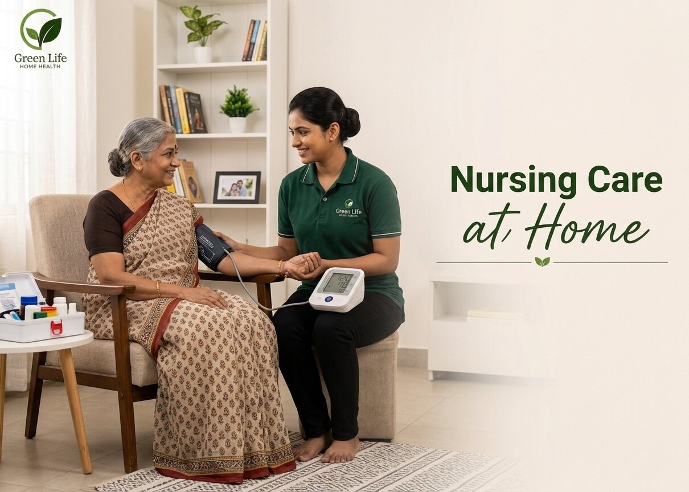

01
Nursing Care at Home
Skilled nursing support for medical routines, bedside observation, vitals and patient comfort.
Best for
Patients needing wound care, injections, catheter care, medication support or trained bedside nursing.
View Service Details